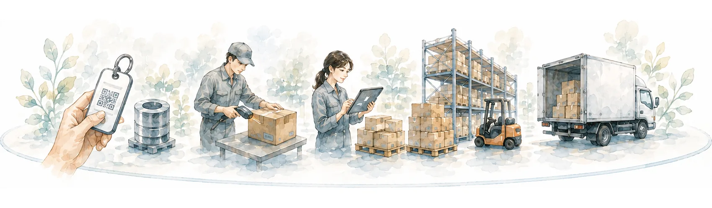
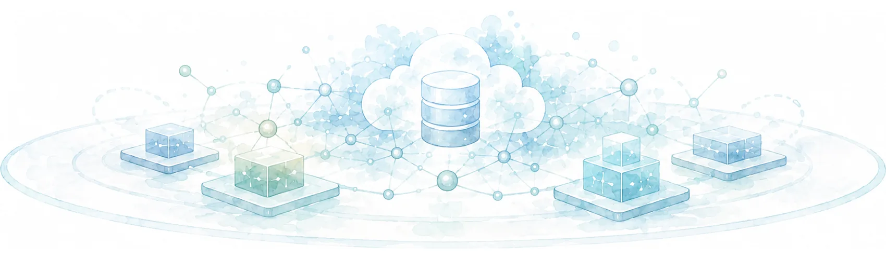
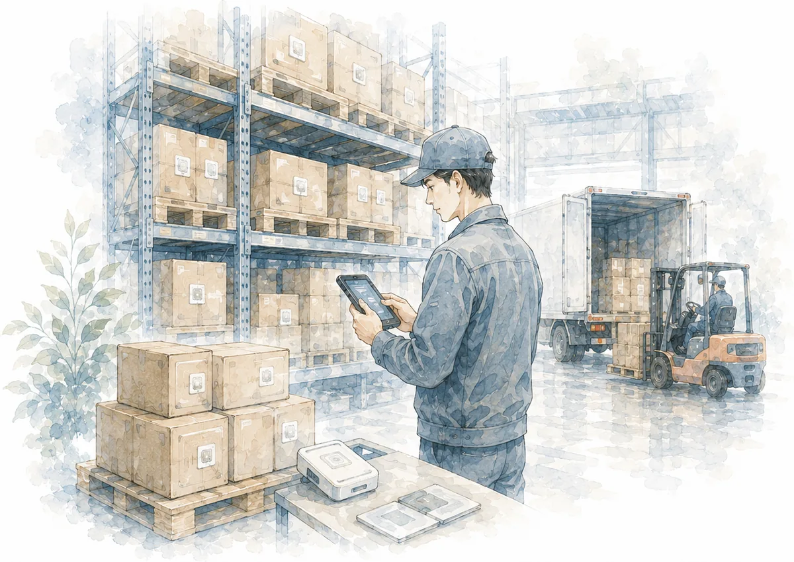
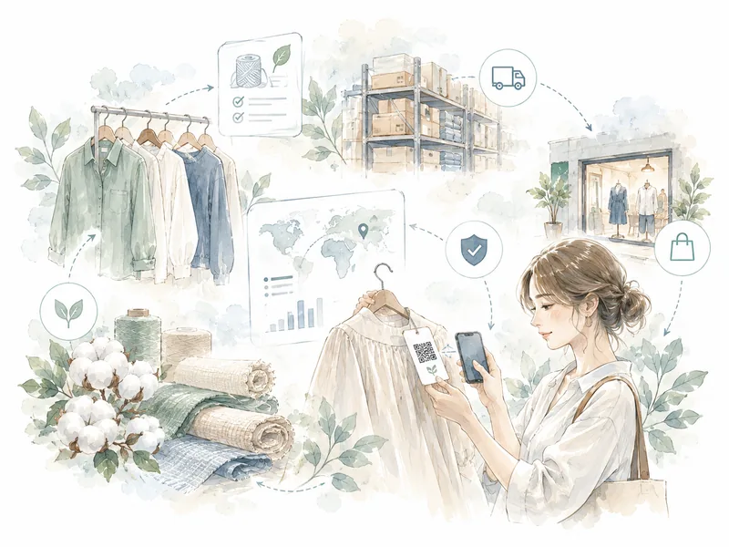
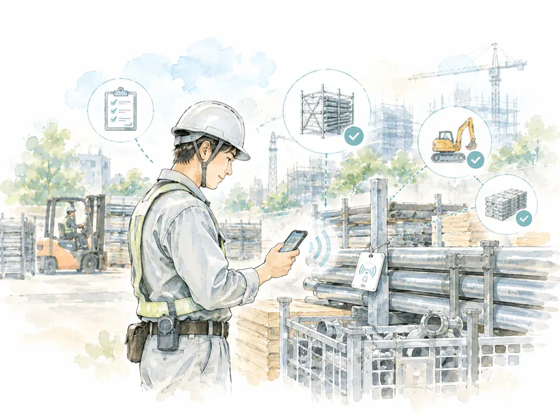
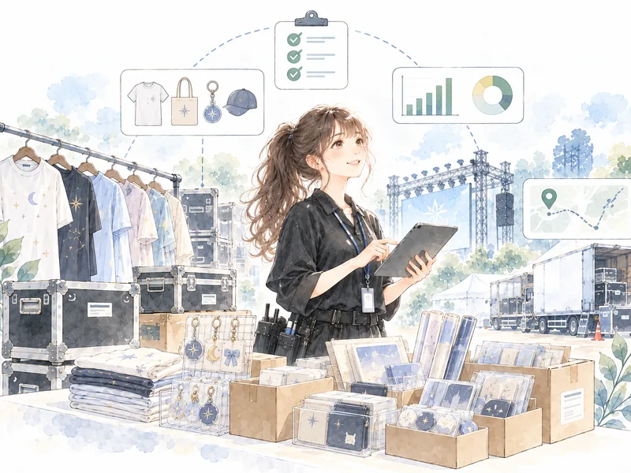
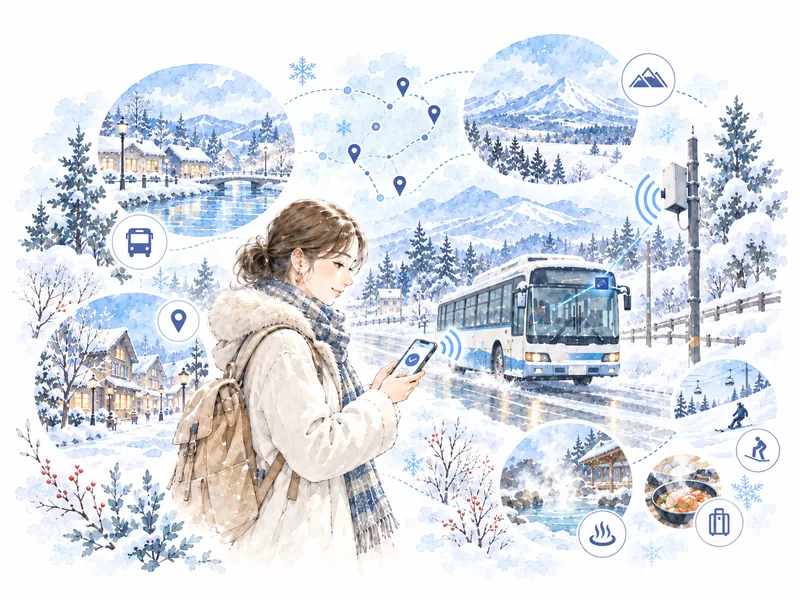
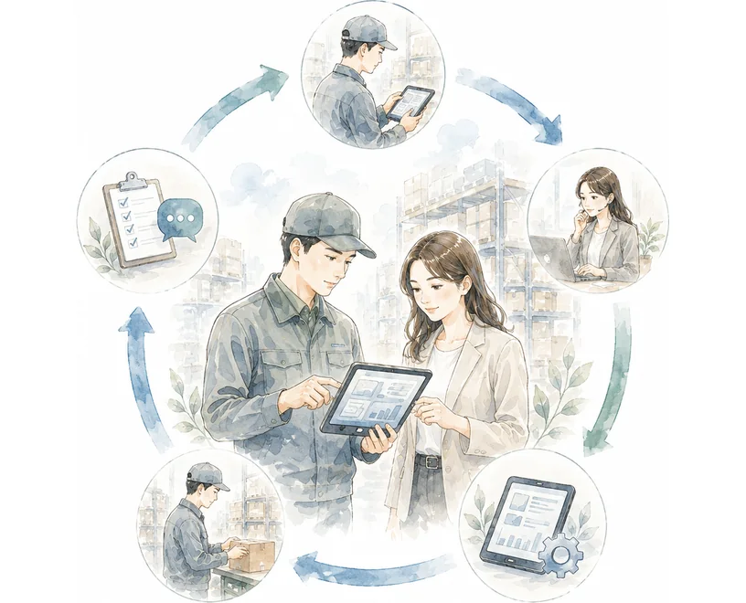
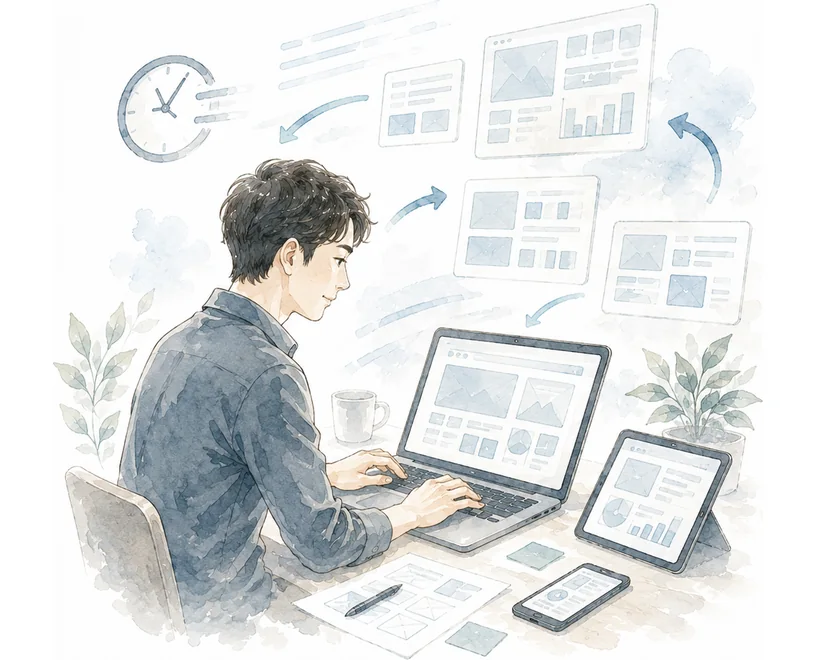
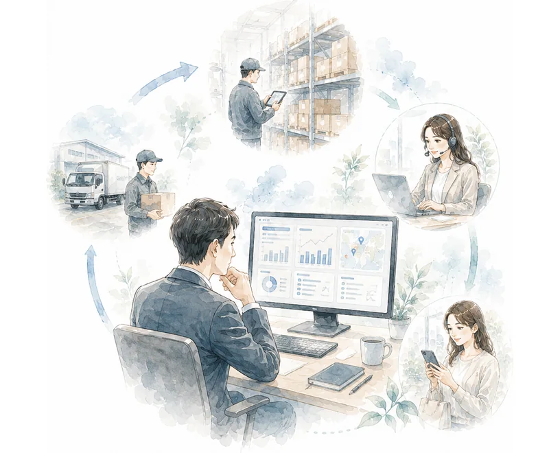

SERVICE
現場の情報を、事業を動かす基盤へ。
WHAT WE DO
現場の情報から仕組みを実装し、動かし続ける。
モノの移動、作業の進捗、設備の状態、製品の履歴。
現場には、まだ十分に記録・活用されていない情報が数多くあります。
株式会社虹は、それらを取得してデータに変え、現場で使われ続けるシステムとして実装します。
現場から取得する
RFID/NFC・QR・IoT を活用し、モノ・人・場所・状態・履歴を現場から取得します。

使える仕組みに変える
取得した情報を、Webアプリ、モバイル、クラウド、API、管理画面を通じて、業務で使える仕組みに変えます。

使われ続ける状態をつくる
導入後の運用、改善、データ活用まで見据え、現場で使われ続ける状態をつくります。
SOLUTIONS
製品の履歴を、つくる工程から手に渡ったあとまで。
すべての工程の記録を Niji TS がひとつにつなぎます。
その記録を、在庫では棚卸しに、購入後は正規品の確認に生かします。
- 製造個体IDの付与
- 検品検品の結果
- 入庫・在庫所在と数量
- 出荷出荷先
- 販売販路
- 購入正規品の確認
- 所有・譲渡所有の移転

RFID棚卸しまとめて読み取り、在庫を数える
B-Watchdog™購入時にかざして、正規品を確かめる
PRODUCTS
個体管理・トレーサビリティ基盤 Niji Brand Trust Platform
製品や資産に個体IDを与え、起きたことを履歴として記録し、業務に生かすための基盤です。
履歴を記録する Niji TS と、ブランド保護の B-Watchdog™ で構成しています。
TRACEABILITY
Niji TS
製品IDごとに、起きたことを履歴として書き足していきます。
製造から販売後まで、あとから書き換えない追記型の台帳で残します。複数の履歴を同じ個体IDに接続し、流通や所有の整合性を確認するための根拠をつくります。
- 追記型の履歴台帳
- RFID・NFC・QR対応
- 出荷後の追跡
BRAND PROTECTION
B-Watchdog™
正規品を確かめ、模倣とグレー流通の兆候を捉えます。
流通の過程から購入後まで、読み取りを製品の履歴と照らし合わせます。確かめる場は、そのまま顧客との接点になります。何を証拠とするかは、ブランドごとに設計します。
- 正規品の確認
- 模倣・グレー流通の兆候
- 顧客との接点
RFID・NFC のシステム相談・個別開発にも対応しています。
RFIDによる棚卸しや、資産の貸出・返却管理などにも対応できます。
既存の業務や管理システムに合わせて、読み取りの仕組みから設計します。
FIELDS ／ 導入領域
業種は違っても、現場に眠る課題は同じ形をしています。
分野の異なる現場で、情報の取得から実装、運用までを一貫して担っています。
共通しているのは、モノに個体IDを与え、現場で読み、システムに蓄積・分析する、という形です。

アパレル・繊維
アパレル・繊維
製品・半製品の個体／ロット管理と棚卸、流通のトレーサビリティを、既存の基幹・物流システムと連携して実装しています。

建設・仮設機材
建設・仮設機材
機材の個体管理・現場棚卸・安全点検を、通信環境の弱い現場でも動くオフライン対応アプリでデジタル化。リリース後の保守運用まで担っています。

エンタテインメント／イベント資産
エンタテインメント／イベント資産
案件・資産・帳票・権限を横断管理する統合基盤を構築し、属人運用を仕組みへと置き換えています。

地域交通・観光
地域交通・観光
個人情報に配慮しながら、人の動きや混雑を段階的にデータ化する実証に取り組んでいます。
REPRESENTATIVES ／ STRATEGY × ENGINEERING
構想を描く力と、実装しきる力をひとつに。
事業として成立するか、現場で使えるか、技術として実装できるか。
要件が固まりきる前の段階から、この3つを同時に見ながら進めます。
BUSINESS ARCHITECT
97年よりAIGやAXAグループなどで商品開発・新規事業開発を20年近く経験。17年以降SBIグループで、新規事業創出（AIがんゲノムプロジェクト）、欧州ユニコーンWefoxとのJV設立などの実績。SBIトレーサビリティ株式会社を創業し、代表取締役としてトレーサビリティ事業を立ち上げ。
事業開発・新規事業・PMOを中心に、構想を実装可能なプロジェクトへ変換します。
輪島 智仁REPRESENTATIVE DIRECTOR
FULL-STACK ENGINEER
不動産テック「イタンジ」共同創業者として業界インフラとなる基盤システムの構築に貢献。東京大学大学院で広域システム科学を専攻。現在はカナダを拠点に、最先端技術を用いたプロダクト開発を手がける。
クラウド、AI、IoT、Web/モバイル開発を横断し、アーキテクチャ設計からコアロジック実装まで担当。高速プログラミングとAIの活用で、スピーディな開発を実現します。
将積 健士DIRECTOR / CTO
BUSINESS要件整理業務設計PMO提携・体制づくり
ENGINEERINGシステム設計RFID・NFCデータ基盤業務アプリ
APPROACH
動くデモを起点に、現場に合う形へ磨き込む。
要件が完全に固まる前でも、まず動くデモアプリを共有いたします。
画面や操作感を確認しながら、現場の反応、業務フロー、運用上の違和感を素早く反映します。
速くつくるためではなく、早く確かめるために動くものを。
01 DEMO
動くものを共有する
早期に動くデモを共有し、関係者の認識をそろえます。
02 FEEDBACK

現場の反応を聞く
画面や操作感をもとに、現場の反応や違和感を把握します。
03 REVISION

柔軟に見直す
UI、業務フロー、データ項目、運用設計を柔軟に見直します。
04 RELEASE

使える状態に整える
現場で使える状態へ整え、導入後の改善まで見据えて進めます。
05 PARTNERSHIP
ともに育て続ける
導入後も保守運用と改善を続け、次の打ち手を現場とともにつくります。
まだ形になっていない話から、ご相談ください。
「何から手をつければいいか分からない」の段階で構いません。
現場をうかがい、動くデモをお持ちするところから始めます。